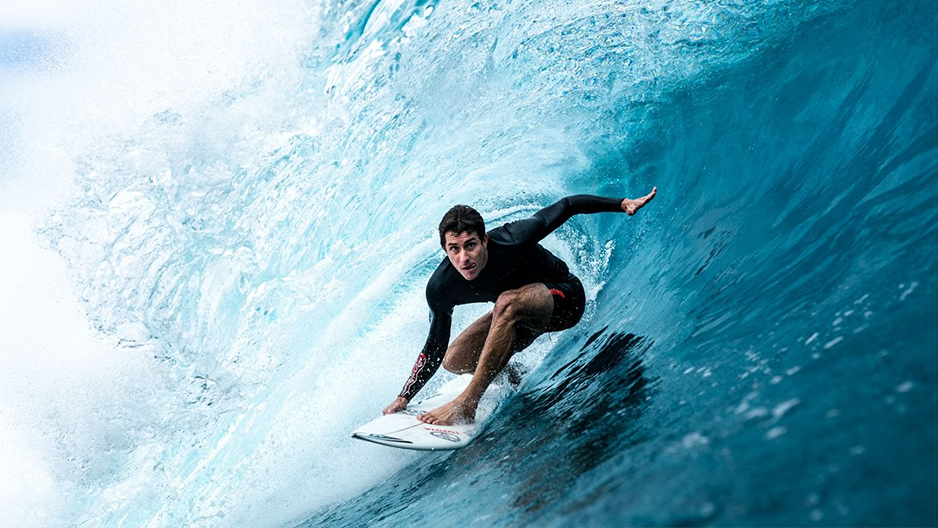

Lucca Mesinas es un surfista profesional peruano nacido el 22 de abril de 1996 en Punta Hermosa, Lima. Desde muy joven, Lucca se destacó en las olas de su país, convirtiéndose en uno de los talentos más prometedores del surf peruano.
A lo largo de su carrera, Lucca ha competido en numerosos eventos nacionales e internacionales, ganando reconocimiento por su habilidad y estilo en el agua. En 2015, se coronó campeón del Circuito Nacional de Surf de Perú en la categoría Open Hombres, demostrando su dominio en las olas peruanas.
En el ámbito internacional, Lucca ha dejado su marca en competiciones de la World Surf League (WSL). En 2018, logró un destacado tercer lugar en el Maui and Sons Arica Pro Tour, una de las paradas más importantes del circuito de la WSL Qualifying Series (QS), en Chile. Este resultado le otorgó puntos cruciales para su clasificación en el ranking mundial de surf.
Uno de los mayores logros de Lucca fue su participación en los Juegos Panamericanos de Lima 2019, donde obtuvo la medalla de plata en la disciplina de surf, consolidándose como uno de los mejores surfistas de América.
En 2021, Lucca logró su clasificación para los Juegos Olímpicos de Tokio 2020, convirtiéndose en el primer surfista peruano en competir en unos Juegos Olímpicos. En esta competición histórica, Mesinas llegó hasta los cuartos de final, mostrando un desempeño sólido y dejando en alto el nombre de Perú.
Con su dedicación, talento y determinación, Lucca Mesinas se ha ganado el respeto y la admiración de la comunidad del surf, convirtiéndose en un referente para las nuevas generaciones de surfistas peruanos y una inspiración para todos los amantes del deporte.
